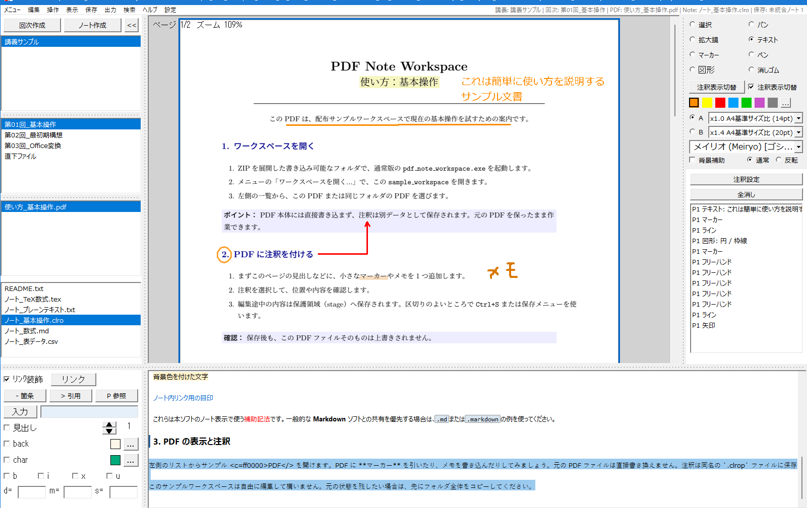

使い方
同梱リポジトリ版: (ZIP配布物ではここにバージョンが記載されます)
この文書では、PDF とノートを安全に扱い始めるための基本操作を案内します。迷ったときは、まず保存せずに画面の表示とファイル名を確認してください。

PDF Note Workspace メイン画面
*（PDF閲覧・非破壊注釈・手書きメモ・ノート編集を1画面で行えるメイン操作画面）*
1. 最初にすること
1. 配布物を、書き込み可能なフォルダへ展開します。ZIP の中から直接起動しないでください。展開、ショートカット、関連付け、更新の詳細は How_to_Setup.md を参照してください。
2. 通常は pdf_note_workspace.exe を起動します。PDF やノートを閲覧だけしたい場合は、readonly_viewer.exe を使えます。
3. 初回確認には sample_workspace/ を使えます。自分の資料で作業を始める前に、必要ならこのフォルダを複製して別名のワークスペースとして使ってください。
readonly_viewer.exe は、同梱文書や一般的なテキストを確認するための簡易ビューアです。PDF への注釈やノート編集には通常版を使います。
Office ファイルや画像を PDF にする
通常版では .docx と .pptx を PDF へ変換して、現在のワークスペースの PDF 欄へ取り込めます。メニューの「LibreOfficeでDOCX/PPTXをPDFに変換（試験的）...」を使うか、ワークスペースへファイルをドロップします。ドロップ時は対象一覧と確認が表示され、「変換する」を選んだ場合だけ変換します。
また、画像ファイル（.png / .jpg / .jpeg）も 1 ページの PDF へ変換してワークスペースへ取り込めます。PDF 一覧の右クリックメニューから「画像をPDFに変換（1ページPDF作成）」を選ぶか、ファイルをドロップして取り込みます。元の画像ファイルは変更せず、画像の解像度・サイズに基づき 1 ページの PDF を生成します。
変換は同梱 LibreOffice やローカルライブラリを使う完全なローカル処理です。Microsoft Office や外部オンライン変換サービスには接続しません。元の DOCX/PPTX や画像は変更せず、変換結果の PDF を確認してから使ってください。Office 文書のフォント、図形、数式などによっては、見た目が元の Office 文書と完全には一致しないことがあります。
Lite版はウィンドウ名に Lite と表示され、Office-to-PDF 変換 runtime を含みません。Lite版へ DOCX/PPTX をドロップしても変換・取込みは行わず、使えないことを表示します（画像からの 1 ページ PDF 作成および既存の PDF の取り込みは利用できます）。
.md の Mermaid flowchart は、ビューアで「図表 Ctrl+4」を選ぶと図として確認できます。初期対応は flowchart / graph の基本的なノード、矢印、subgraph に限られます。ノードはラベル量に応じて大きさを調節します。1つの文書に対応済みの図表が複数ある場合は、まとめて表示します。図表上ではマウスホイールで上下へ移動し、Ctrl を押しながらホイールを回すと縮小・拡大できます。右クリックすると専用の図表ウィンドウを開き、拡大・縮小・等倍ボタンとスクロールで詳しく確認できます。未対応の構文やエラーがある場合は、Raw または装飾表示で原文を確認してください。図表の表示は読み取り専用で、Markdown ファイルを変更・保存しません。
2. ワークスペースを開く
メニューの「ワークスペースを開く...」から、作業フォルダを選びます。PDF、ノート、注釈はワークスペース内でまとめて扱います。
PDF 本体には直接書き込まず、注釈は別データとして保存します。そのため、元の PDF を保ったまま注釈作業ができます。
作業用フォルダは、授業・資料・案件など、あとで見分けられる単位で分けると管理しやすくなります。アプリが管理する __resource__ フォルダは、復旧や編集途中の保護にも使われるため、通常は手動で移動・削除しないでください。
注釈入り PDF を別ファイルとして書き出す
注釈を反映した PDF を共有・提出したいときは、次の手順で注釈入り PDF を作成します。
1. 注釈を付けた PDF を開きます。
2. メニューバーの 出力 から 簡単: 注釈を統合してPDF出力... を選びます。
3. 出力先とファイル名を指定して、出力します。
書き出し時には、未保存の注釈を先に保存してから出力します。元の PDF と .clrop は上書きされず、注釈を反映した別の PDF ファイルが作られます。既にあるファイル名には出力できないため、新しい名前を指定してください。
[!NOTE]
文字色変更注釈を含む PDF は、現在は注釈入り PDF として書き出せません。この場合は出力ファイルを作成せず、理由を表示します。
3. ノートを作る
「ノート作成」で新しいノートを作れます。既定の拡張子は .clro です。
.clroは本ソフトで作成・管理する標準ノートです。.md/.markdownは他の Markdown ツールとの互換性を優先したい場合に選べます。.texは TeX の数式を含むノートに使えます。.txt/.csvは書式を解釈しないプレーンテキストです。.csvの表計算用の特別な処理は行いません。
詳しくは What_is_File_Formats.md を参照してください。
ファイル名は、内容が分かる短い名前にします。既にある .md や .txt を開いて編集しても、アプリが勝手に .clro に変更することはありません。
4. 編集内容を保存する
編集途中の内容は、まず stage（編集途中を保護する領域）へ保存されます。原本へ反映するには、区切りのよいタイミングで Ctrl+S または保存メニューを使います。
保存前にはバックアップが作られます。保存中にエラーが出た場合は、何度も上書きしようとせず、表示内容を控えてから How_to_Troubleshoot.md を確認してください。保存と復元の仕組みは How_to_Save_and_Recovery.md にまとめています。
5. 困ったとき
アプリ内の「ヘルプ」では、カテゴリを選んで必要な説明を確認できます。「ヘルプ > 独自拡張子 (.clro)」はノート拡張子の説明を直接開きます。
保存失敗、復元、開けないファイルなどは How_to_Troubleshoot.md を参照してください。
ヘルプはアプリに同梱されており、外部サイトへ接続しません。